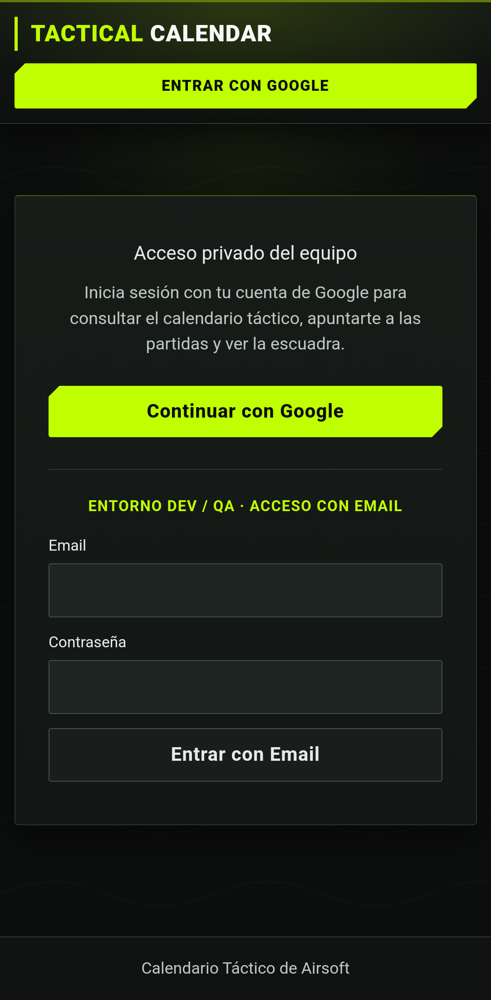
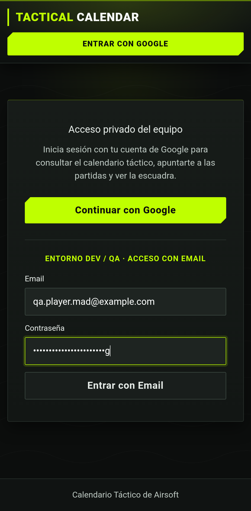
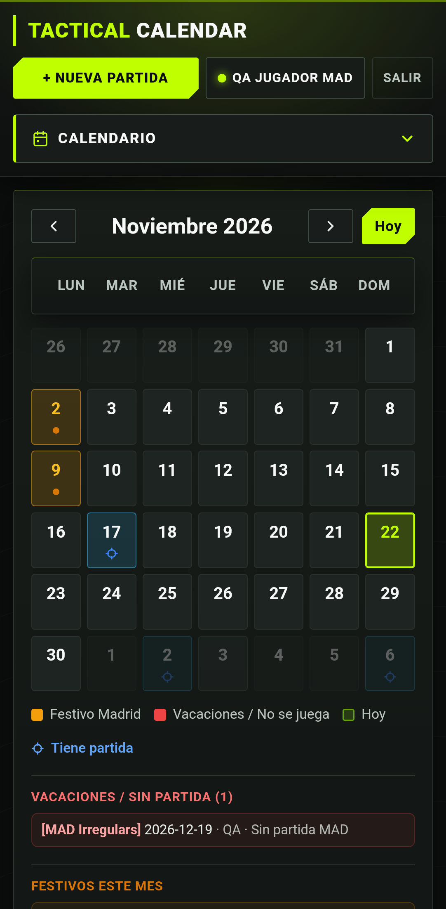
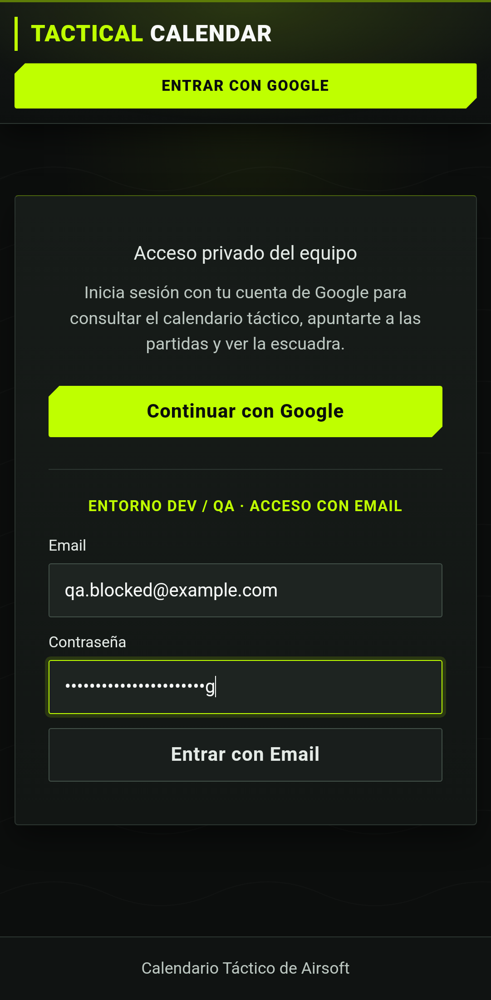
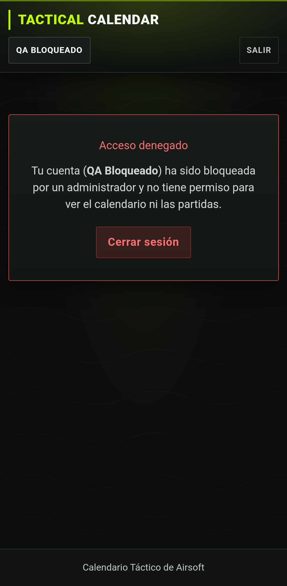
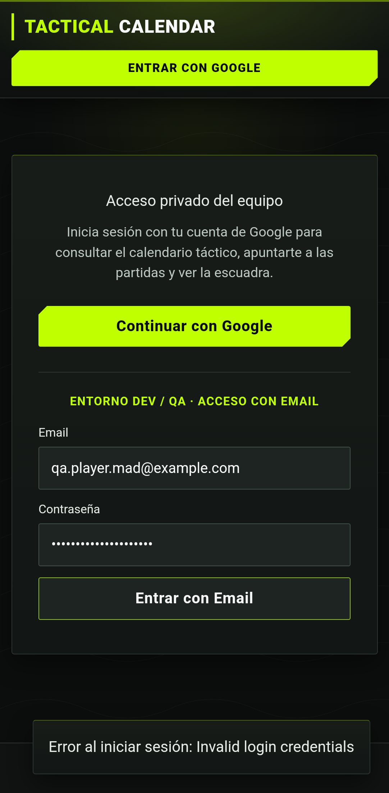

Informe de Appium (app Android)
Suite a-auth · tactical-calendar · 22/11/2026, 23:15:54 · 25.0 s
100%Tasa de éxito (4 de 4)
4Pasan
0Fallan
0Omitidos
Entorno
- Dispositivo
- sdk_gphone64_x86_64 (emulador)
- Android
- 14
- Modo
- App Android (com.tacticalcalendar.app) dentro de su WebView
- Driver
- Appium 2 · UiAutomator2 · WebdriverIO
- Destino
- Staging de Tactical Calendar (nunca producción)
| Pasa | TC-SMOKE La app carga y muestra el login QA App Android  |
1.5 s |
| Pasa | TC-A01 Jugador con equipo entra y ve la navegación completa App Android   |
10.8 s |
| Pasa | TC-A02 Usuario bloqueado ve acceso denegado App Android   |
5.9 s |
| Pasa | TC-A04 Contraseña incorrecta muestra error y no entra App Android   |
6.7 s |